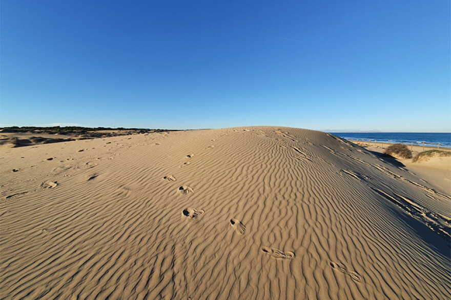
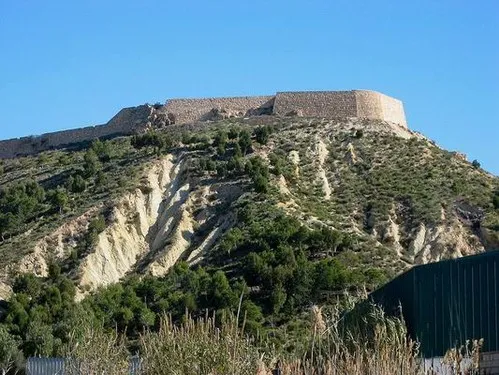
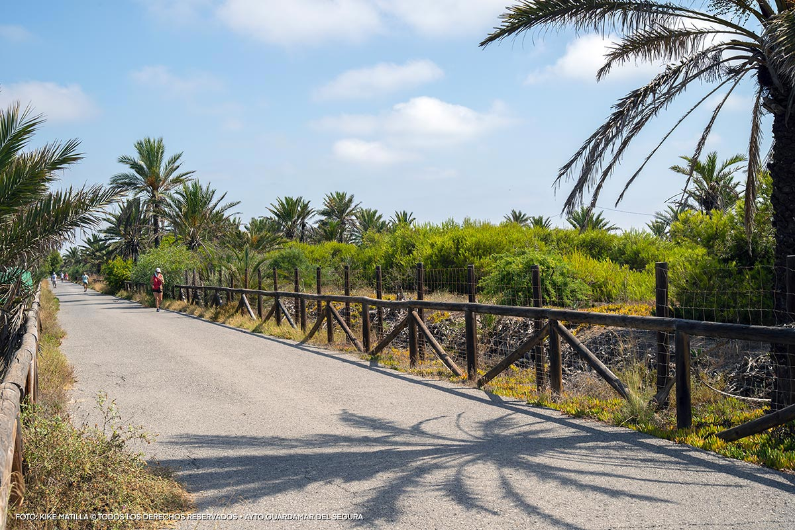

Guardamar del Segura,
naturaleza y playas de ensueño
Guardamar del Segura, situado en la Costa Blanca de Alicante, es un destino que combina playas paradisíacas, una rica herencia histórica y paisajes naturales únicos. Este pequeño pero vibrante pueblo mediterráneo es perfecto para quienes buscan disfrutar del mar, explorar la cultura local y conectar con la naturaleza. A continuación, te invitamos a conocer los puntos más destacados de Guardamar.
Playas y dunas
Guardamar cuenta con más de 11 kilómetros de playas de arena fina, rodeadas por dunas protegidas que forman un entorno único en la región. Destacan playas como La Roqueta, ideal para familias, y El Moncayo, más tranquila y con un paisaje natural incomparable. El sistema dunar de Guardamar es uno de los mejor conservados en España, gracias a los pinares que se plantaron en el siglo XIX para frenar la desertificación.
Un pueblo con historia
Guardamar es también un lugar donde la historia cobra vida. En el corazón del pueblo se encuentra el castillo medieval, que ofrece vistas panorámicas de la zona. Además, el yacimiento fenicio de La Fonteta es uno de los enclaves arqueológicos más importantes de la península, testigo de la influencia de antiguas civilizaciones en este rincón del Mediterráneo.
Muchos enclaves naturales que ver
El Parque Reina Sofía es un oasis verde donde disfrutar de la tranquilidad, con sus lagos, cascadas y una rica fauna. Por otro lado, el Parque Alfonso XIII invita a recorrer senderos entre pinos y eucaliptos, siendo perfecto para los amantes del senderismo. Además, la desembocadura del río Segura crea un humedal único que es hogar de numerosas aves.
Buena gastronomía, cultura y ¡mucho más!
La cocina de Guardamar es otro de sus grandes atractivos. No puedes dejar de probar los arroces tradicionales, los pescados frescos y su ingrediente más emblemático: la ñora, un pimiento seco que forma parte de muchas recetas locales.
Los paisajes, la gente y las actividades deportivas y culturales que ofrece la localidad, convierten Guardamar en un destino turístico perfecto para toda la familia.

En invierno es un lugar muy tranquilo y apacible. En verano un pueblo con mucho ambiente, restaurantes, bares y parques llenos de gente. ¡Ven a visitarnos en cualquier momento del año, seguro que lo pasas genial!